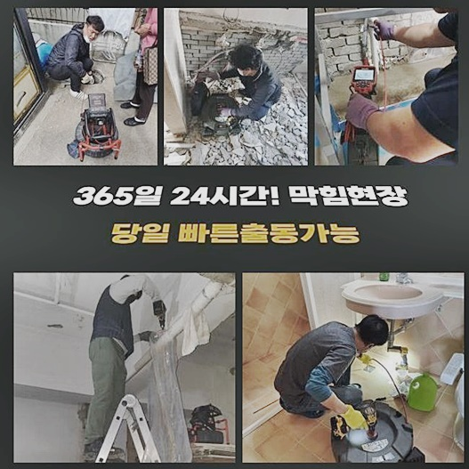
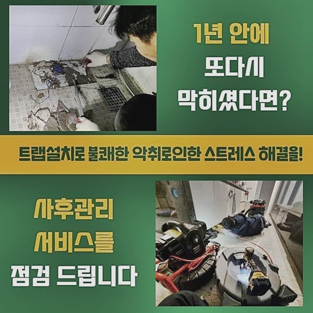
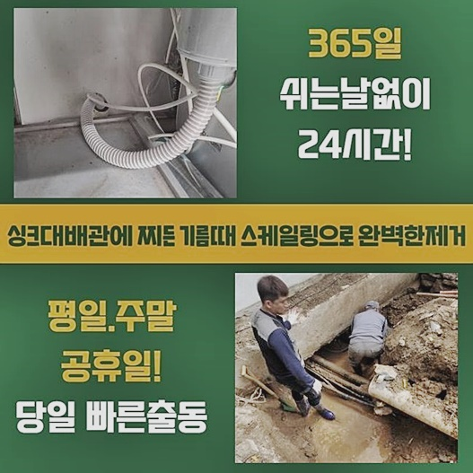
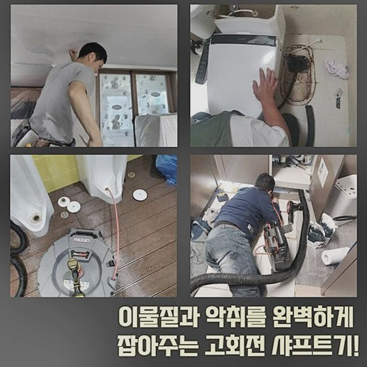
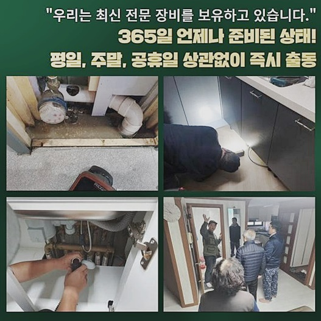
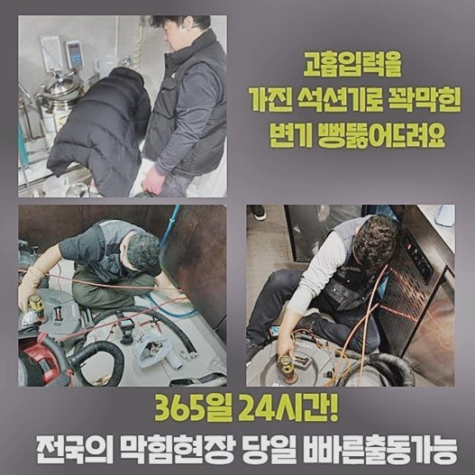

🏠 동작구 본동변기역류 사당동 하수구뚫는비용 부속수리
용인시 처인구 배관막힘 전문 시공 후기

📋 작업 개요
- 위치: 용인시 처인구, 수원시 영통구, 화성시 동탄
- 서비스 유형: 배관막힘, 고압세척, 내시경점검
- 작업 일시:
- 업체명: 하수구수사대 (010-5615-2118)
🔍 문제 상황
동작구 본동변기역류 사당동 하수구뚫는비용 부속수리
배관막힘이 발발하는 까닭은 여러가지예요
음식물 쓰레기나 보습티슈로 인해 생길 수도 있으며 묵은 기름성분이 빠져나가지 못하고 누적된 후 시간이 오래 지나버려 굳어지게 되어 사용이 어려운 부분도 예측과 다르게 많아요
금일엔 배수관막힘 처소를 말씀해 드리도록 하겠습니다
이처소는 개수대 막힘이 빈번하게 발발하여서 내방을 요망하셨는데요
이러한 문제가 생겼을 때에 뚫어뻥 액상이나 온수 또는 기다란 막대를 사용해서 문제를 타파하고자 하는 고객분들이 많은 것으로 알고 있는데요
간단한 정체라면 처치할 수 있겠지만 다층적 연유에 의하여 막혀버리는 일이 생겼다면 자체적으로 고쳐내기는 난망합니다
해당되는 처소는 주방 바닥쪽에서 특별히 오수가 빈삭하게 흘러나오고 파이프쪽에서도 정체가 심화되었기에 물이 넘쳐버리는 모습이었죠
주방공간은 거름장치가 붙어있어 설거지 과정에서 방출되는 잔재를 일차로 걸러내고 나머지가 파이프로 빠져나가고 있었네요
다만 조그마한 찌꺼기나 기름물질들은 걸러지지 않고 관로로 직행하게 되는데요
이에 따라 침전물이 점차적으로 하수관에 누증되면 안에서 물이 흘러나갈 스페이스가 계속해서 비좁아지게 되며 배관트러블이 일어나요
체계적으로 문제를 풀어내려는 일환으로 내시경설비를 내측으로 집어넣고 내부의 정확한 상태를 살피기로 하였죠
주방시설의 하수관은 하부장쪽 바닥면으로 결부되어 있었어요

🔎 원인 분석
💡 전문가 진단: 정밀 진단 장비를 사용하여 슬러지의 고착 여부를 판명하고 타격/세척 작업을 실시했습니다.
그렇기에 이 문제를 수리해내려면 그 부분을 개문하여서 조사를 할 필요가 있죠
다만 이곳과 같이 관로로 연결된 바닥부위에 접근하기 쉬운 상황이면 구태여 설비 절단까진 생략가능합니다
그러나 대략적인 건물 형태를 분석한 후 평상적인 해결이 어려운 모양으로 이뤄진 싱크볼에는 타공이 요망되기도 합니다
구조물을 일부 절단하는 작업은 내방을 드린 다음에 상황을 파악한 다음 시행되며 이러한 것들은 수선 이전 의뢰인에게 양해를 두한 다음 실행합니다
내시경카메라를 동원하여 관찰한 관로의 안쪽에는 상당량의 침전물이 누증된 상황이었습니다
각종 기름찌꺼기들이 서로 엉겨서 주방에서 발생한 탁수가 빠져나가지 못했답니다
보통 기름찌꺼기는 물성분과 혼합되지 않기에 관로에 기름성분이 넘어가면 신속하게 소멸되지 않고 배수관의 사이사이에 적체되기 쉽답니다
그리고 지속해서 유분이 들어가면 하수관의 측면에 강력하게 달라붙어 버려서 저절로 괜찮아지기 무망하답니다
한두번 쯤은 이러한 정체 상황을 극복해내기 위해서 수돗물을 데워서 넣어보셨을 것이라 생각합니다
다만 이것은 되레 관로에 부적절한 영향력을 보내기도 해요
보편적으로 주거지에 세팅되는 파이프는 대개 플라스틱 계열인데 해당 부속은 열기에 견디는 힘이 약해요
이 때문에 더운 물을 가득 채워 붓게 된다면 파이프가 무르게 되어서 절단되거나 균열이 생길 수도 있답니다
그러므로 더운물이 아니라 기술적인 접근으로 신속하게 잔재들을 처치하는 게 배수관 정체현상을 고치는 키라고 볼 수 있습니다

🔧 작업 과정
배수관 정체현상을 안전하게 고쳐낼 수 있는 공구는 고속 샤프트설비입니다
이건 내측에 머물던 이물을 파쇄하는 상품이며 사슬모양의 체인노커로 구성되어있고 사용자가 목표를 확정한 다음에 노즐을 움직이게 유도하면 체인 형태의 부품이 배수관 안의 슬러지를 제거합니다
파이프에는 별스럽게 고장을 유발하지 않는 기계이지만 어떤 사람이 시행하는지에 따라 종종 트러블이 생길 수도 있답니다
따라서 저희측에서도 신중한 자세로 완성도높은 결과물을 만들어냅니다
기나긴 세월 동안 쌓인 찌꺼기들은 5~10분가량의 분쇄작업으로는 소멸시키기엔 난관이 많죠
그러므로 반복적인 업무를 바탕으로 소거해 나가야 한답니다
역류상황과 막힘을 동시에 촉발하던 노폐물들을 플렉스샤프트로 신속하게 소멸시키면 점점 깔끔한 상태의 관로로 변화합니다
중간중간 내시경카메라를 넣어서 잔류하는 침전물을 진단해 줍니다
다수의 유분이 둘러쌓였던 관로가 정결해진 모양새를 직관하실 수가 있답니다
조금의 찌꺼기라도 파이프에 잔존한다면 시간이 지나면서 또다시 물막힘이 생기는데요
식기 세척 과정에서 발생하는 것들과 손쉽게 섞이고 덩어리지고 이것으로 배수과정을 차단하는 겁니다
그러므로 처음 클리닝할 때에 약간의 슬러지라도 존재하지 않게 집중하여 작업해 나가야 합니다
수회 소제를 실시하면 결국 관로가 시원하게 뚫려버립니다
역류증세와 정체를 동시적으로 유발하던 이물들이 깨끗하게 소쇄된 것을 확인할 수 있었으며 촬영된 모습을 손님께도 확인시켜 드렸답니다
손님도 이 모습을 직접적으로 바라보실 수 있었으며 통수 시공의 전반적인 업무를 목도하게 되었답니다
이렇게 업무 전반을 신용있게 안내하고 있으므로 불안하지 않은 방문이 계속되는 것이라 생각합니다
해당현장의 배수관 정체현상을 전체적으로 정리했다면 물내림과 관련한 시험을 이행하죠
수리 성과를 검증하려면 배관입구를 잠시 막아두고 바케쓰 등에 그득하게 액체를 담아서 일거에 부으면 성공 연부를 직관할 수가 있답니다
탁수가 소멸되기는커녕 형국은 더욱 곤란하게 바뀌던 와중에 플렉스샤프트를 활용해 쉽게 완결할 수가 있었어요
후회없는 수리업무를 이행하려면 정당하게 처치를 실행하는 기술자의 방문이 필수입니다


✅ 작업 완료
숙련된 기술력을 기초로 믿을 수 있는 배관통수 전문인의 협조를 통하여 살뜰하게 처리할 수 있죠
사태를 전체적으로 해결한 다음 주위 청소도 이행한 뒤 배관통수 현장을 끝마쳤어요
세척하는 동안 근처에 슬러지가 날아갈 수도 있으며 각종 유독물질이 잔류할 수 있어서 이에 대한 청소도 반드시 수선한 다음 속행해 드리죠
이번 배관통수 현장처럼 건물 내부에서 정리할만한 곳이면 관계없지만 배관 하단부위까지 노폐물로 빽빽한 케이스라면 물청소 업무가 추가될 수 있답니다
세부적인 안내는 세대 내에서 방문을 통해서 구체적으로 고지하오니 방문 진단을 우선적으로 신청해 보십시오
배관통수과 관련된 의문점이 있으시다면 휴일이라도 망설이지 말고 전화부탁드려요



⚠️ 하수구 배관 막힘 예방 및 관리 가이드
- ✅ 머리카락, 비닐, 물티슈 등 물에 분해되지 않는 이물질은 절대 흘려보내지 마세요.
- ✅ 기름기 많은 식기는 설거지 전 키친타올로 먼저 기름때를 닦아내세요.
- ✅ 주기적으로 배수구에 뜨거운 물을 가득 부어주어 유지방 고착을 방지하세요.
- ✅ 작업 후 1년 이내 재발 시 무상 A/S 보증 서비스를 제공합니다.
💡 핵심 정리
- 확실한 장비 작업(내시경 점검 및 샤프트 스케일링)으로 원인을 뿌리 뽑습니다.
- 작업 후 1년 이내에 동일한 부위 재발 시 100% 무상 A/S 서비스를 보장합니다.
- 서울 · 경기 · 인천 전 지역에 24시간 언제든 긴급 출동할 수 있도록 항시 대기 중입니다.
❓ 자주 묻는 질문 (FAQ)
🚨 용인시 처인구 배관막힘 문제로 고민이신가요?
정확한 원인 진단과 확실한 시공으로 재발 없는 해결을 약속드립니다.
24시간 긴급 출동 | 서울 · 경기 · 인천 전지역 | 1년 내 재발 시 무상 A/S